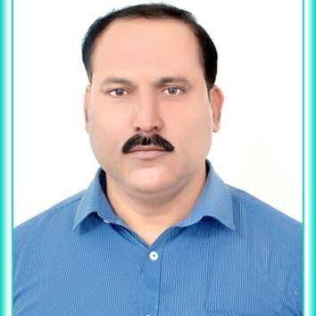

Syed Rizwan Ali (President and Founder)
The prime objective of the association is to promote Social work profession and to help and facilitate the students of social work in their internships, training, job placement and research work. In recent past premier institutions and different social work departments of the State and Central universities have done very hard works to give recognition to social work profession and still the efforts are going on. At other hand a large number of non government organization (NGOs) are working in State and involved in implementation of Government schemes. These NGOs needs to be trained with technical knowledge and techniques of social work profession. As a State level association of Social work professional we will closely work with different Government departments to ensure the role of Social work profession either through training, Job placements or technical support to their scheme implementing partners. Indeed our Alumni of different social work departments are also working in different fields and playing a important role and can help the fresher for their jobs, we will also provide Financial and logistics supports to social work department and to organize and reorganize their Alumni and ensure their regular annual meetings. Finally, I request all my respected Teachers, Friends, Colleagues and students to join this association as a member to achieve its objectives and give a new strength and direction to social work profession and ensure better future of our coming generation.